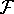
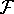

Ambiguous functions are not really functions. For each prescription of values to the arguments the ambiguous function has a collection of possible values. An example of an ambiguous function is less(n) defined for all positive integer values of n. Every non-negative integer less than n is a possible value of less(n). First we define a basic ambiguity operator amb(x,y) whose possible values are x and y when both are defined: otherwise, whichever is defined. Now we can define less(n) by
less(n) has the property that if we define
then
There are a number of important kinds of mathematical arguments whose convenient formalization may involve ambiguous functions. In order to give an example, we need two definitions.
If f and g are two ambiguous functions, we shall say that f is a descendant of g if for each x every possible value of f(x) is also a possible value of g(x).
Secondly, we shall say that a property of ambiguous functions is hereditary if whenever it is possessed by a function g it is also possessed by all descendants of g. The property that iteration of an integer valued function eventually gives 0 is hereditary, and the function less has this property. So, therefore, do all its descendants. Therefore any integer-function g satisfying g(0) = 0 and has the property that is identically 0 since g is a descendant of less. Thus any function, however complicated, which always reduces a number will if iterated sufficiently always give 0.
This example is one of our reasons for hoping that ambiguous functions will turn out to be useful.
With just the operation amb defined above adjoined to those
used to generate  , we can extend  to the class
which may be called the computably ambiguous
functions. A wider class of ambiguous functions is formed using the
operator
, we can extend  to the class
which may be called the computably ambiguous
functions. A wider class of ambiguous functions is formed using the
operator  whose values are all x's satisfying
whose values are all x's satisfying